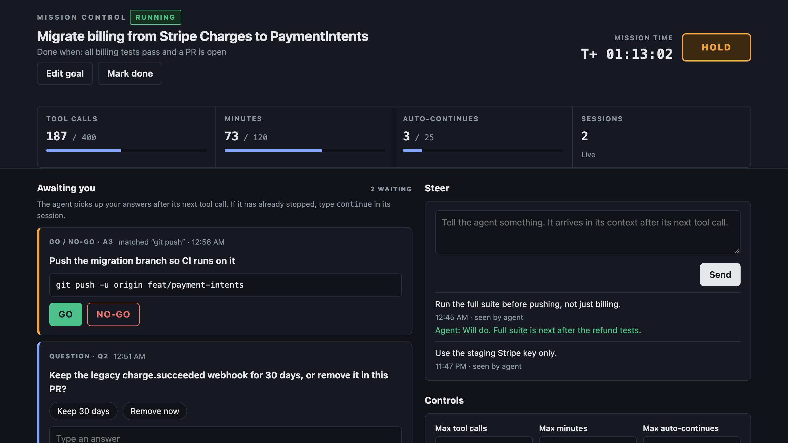

Agent Mission Control keeps long Claude Code runs on track: a goal with a "done when" it keeps working toward, budgets that actually stop it, GO / NO-GO approvals for risky commands, and your notes delivered between tool calls. Your phone buzzes when it needs you; you answer at your machine.
One-time purchase. Runs on your machine. No account, no service, no dependencies. Going to bed? Give it the night:mc set maxMinutes 600 and mc set maxToolCalls 2000.

A quiet stop halfway through a migration while you were asleep, with nobody to tell it to keep going.
A force-push, a publish or a rm -rf it should have asked about, or three hours burned on a dead end.
Set the goal and a "done when". The Stop hook keeps the run going until the agent marks it done (it's told to only when your condition holds, and you see its summary), you put it on hold, or a budget runs out.
Cap tool calls, minutes and automatic continues. When one runs out, tools are refused and the agent wraps up.
git push, npm publish or any pattern you add waits for your click. The agent works on other things meanwhile.
Answers and notes reach a running agent after its next tool call. No restart, no lost context.
A push through the free ntfy app when it needs a GO, is blocked, stops or finishes. You answer at your machine.
The console listens on 127.0.0.1 behind a private link. State is one JSON file. Zero dependencies.
| Event | What Mission Control does |
|---|---|
SessionStart | Injects the mission brief: goal, budget, open questions, recent log, protocol |
UserPromptSubmit | Passes along anything new from you |
PreToolUse | Refuses tools on hold or out of budget; holds commands that need a GO; keeps the agent out of its own state |
PostToolUse / …Failure | Counts the call; delivers your notes, answers and decisions |
Stop | While a goal is active, keeps going until it's done, unless it's waiting on you, out of budget, or stuck |
If the state file can't be read, tools are refused with the reason instead of the checks switching off.
| Feature | Free core (MIT) | Full kit ($15) |
|---|---|---|
| Goal and Stop control, budgets | Yes | Yes |
| GO / NO-GO approvals, questions, notes | Yes, from the terminal | Yes, one click |
| Live console with gauges and buttons | No | Yes |
| Phone (ntfy) and desktop alerts | No | Yes |
| Sample mission to try it first | No | Yes |
node install.mjs /path/to/your/project --goal "Ship the CSV export" cd /path/to/your/project node .mission/bin/mc.mjs set maxMinutes 600 # optional: give it the night… node .mission/bin/mc.mjs set maxToolCalls 2000 # …and enough tool calls for it node .mission/bin/mc.mjs ui # kit only: prints the console's private link # in a second terminal, same folder: claude # give it the task; steer from the console
Needs Claude Code and Node 18.17+. Tested on macOS; Linux and Windows aren't tested yet.
Use it on all your own projects, personal or commercial, and share it inside your team. Every purchase funds the free core.
mc CLI, agent skillMission Control itself runs entirely on your machine. The one exception is phone alerts, which are optional: each one carries the command waiting for approval, or the agent's question or summary, to ntfy.sh (topics are readable by anyone who guesses the name) or to your own ntfy server.
Not yet. Your phone gets the alert; you approve or answer at your machine, in the console or with mc. The console is local-only on purpose.
Once it has stopped (a blocking question, a budget, or on hold), nothing restarts it by itself. Answer in the console, then type continue in its session, or run claude -p --continue for headless runs.
No. Human commands like approve, resume and reset-budget are refused when the agent tries them, and so is anything chained onto mc or touching its state folder. Approval patterns are a seatbelt, not a sandbox; Claude Code's own permissions still apply.
By default it installs into your own .claude/settings.local.json and git-ignores its state. Use --shared to put the hook in the committed settings for the whole team.
Open an issue on the GitHub repo.